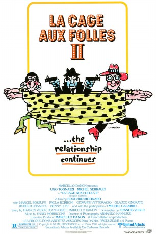

#9033 Ein Käfig voller Narren II
Alternativ: La Cage aux Folles II (Englischer Titel)
 
 IMDB-Wertung: 5.8 / 10
IMDB-Wertung: 5.8 / 10  Metascore: 0
Metascore: 0 
Nightclub owner Renato and his transvestite companion/lover Albin becoming involved with the local cops and foreign spies when Albin unwittingly gets his hands on a roll of stolen microfilm. The gay couple then hide out in Renato's native Italy, but find little peace there with their frequent bickering among themselves.
Jahr: 1980
Dauer: 95 Minuten
FSK: 12
Land: Frankreich Studio: MGM Home EntertainmentTonspuren: DD2.0 - ,
Untertitel:
Auflösung: 1080p (1920x1080) Größe: 8017 MB
Genre: Komödie
Regisseur: Édouard Molinaro
Drehbuch: Jean Poiret
Soundtrack: Ennio Morricone
Darsteller:
 Michel Serrault als Albin Mougeotte / 'Zaza Napoli'
Michel Serrault als Albin Mougeotte / 'Zaza Napoli'- Ugo Tognazzi als Renato Baldi
 Marcel Bozzuffi als Broca
Marcel Bozzuffi als Broca Michel Galabru als Simon Charrier
Michel Galabru als Simon Charrier- Benny Luke als Jacob
- Roberto Bisacco als Ralph
 Stéphane Audran als
Stéphane Audran als - Paola Borboni als Mrs. Baldi
- Giovanni Vettorazzo als Milan
- Glauco Onorato als Luigi
- Gianrico Tondinelli als Walter
- Giorgio Cerioni als Gunther
- Nazzareno Natale als Demis
- Antonio Francioni als Michaux
- Stelio Candelli als Hans
- Mark Bodin als Caramel
- Tom Felleghy als Andrew Manderstam
- Valerio Basso Bondini als
 Nello Pazzafini als Mangin
Nello Pazzafini als Mangin- Danilo Recanatesi als Dr. Boquillon
- Lorenzo Dannon als Terrorist
- Roberto Caporali als Terrorist Accomplice
- Piero Morgia als Killer in Hotel
- Roberto Dell'Acqua als Policeman
- Riccardo Berlingeri als Desk Clerk, Hotel de Lys
- Francis Missana als Handsome Young Man
- Marie-Claude Douquet als Pretty Girl
- Vito Fasano als
- Giuseppe Mattei als
- Cherine Tabetdettosabet als
- Franco Beltramme als
- Renato Basso als Rouget
- Angelo Boscariol als Receptionist
- Philippe Cronenberger als Waiter / Negresco
- Pierre Desmet als Proprietor, Le Roi du Bleu
- Gianni Frisoni als Barman at Cabaret
 Omero Capanna als Policeman (uncredited)
Omero Capanna als Policeman (uncredited)
Datei: X:\2-Dilogie(G-M)\Käfig voller Narren\Käfig voller Narren II, Ein (1980, FSK12, 1920x1080).mkv seit 08.06.2018
Festplatte: HD Collection-2(A-Z)-3(A-M)
 Alle Filme aus Gruppe '2-Dilogie(G-M)\Käfig voller Narren'
Alle Filme aus Gruppe '2-Dilogie(G-M)\Käfig voller Narren'